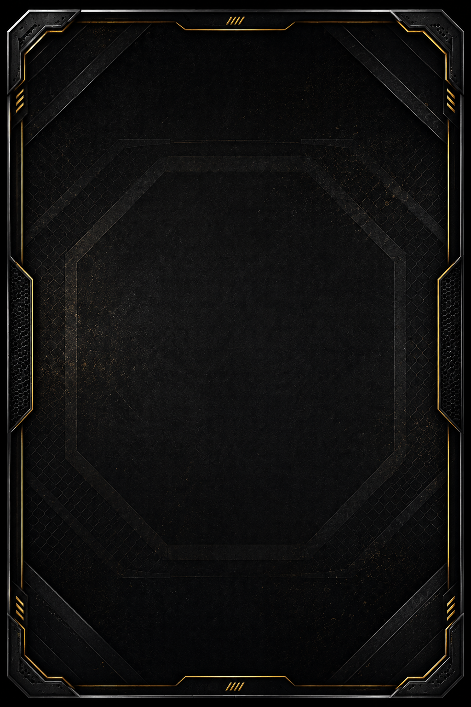

<!doctype html><meta charset="utf-8">
<title>Maqueta de la carta nueva</title>
<!-- MAQUETA, no es el juego. Sirve para mirar el reparto del boceto montado con el marco
     de verdad, un peleador del plantel y sus stats de verdad, antes de tocar juego.html.

     Todas las medidas van en % de un lienzo de 1054x1492 y salen de medir el boceto con
     una rejilla encima, no de ajustar a ojo. Si el dueño mueve algo, se cambia aquí. -->
<style>
@font-face{font-family:Saira Condensed;src:url(../juego/fuentes/saira-700-latin.woff2) format('woff2');font-weight:700}
@font-face{font-family:Saira Condensed;src:url(../juego/fuentes/saira-800-latin.woff2) format('woff2');font-weight:800}
@font-face{font-family:Saira Condensed;src:url(../juego/fuentes/saira-600-latin.woff2) format('woff2');font-weight:600}

:root{
  --oro:#d9a441; --oro-claro:#f2cf7e;
  /* El nombre del boceto es cromado: claro arriba, gris en medio y otra vez claro. */
  --cromo:linear-gradient(180deg,#ffffff 0%,#e6e6e6 38%,#9d9da1 55%,#f2f2f2 74%,#b9b9bd 100%);
}
body{margin:0;background:#0b0b0c;display:flex;gap:44px;padding:44px;
  font-family:"Saira Condensed",sans-serif;color:#fff}
figure{margin:0}
figcaption{color:#9a9a9a;font-size:19px;letter-spacing:.06em;text-transform:uppercase;
  margin-top:14px;text-align:center}

/* ── LA CARTA ─────────────────────────────────────────────────────────────────
   Se maqueta a 1054x1492 fijos y se encoge con transform, nunca bajando las
   tipografías: así ningún mínimo de fuente del WebView puede meterse por medio. */
.carta{position:relative;width:calc(1054px * var(--k));height:calc(1492px * var(--k))}
.lienzo{position:absolute;left:0;top:0;width:1054px;height:1492px;
  transform:scale(var(--k));transform-origin:0 0;overflow:hidden}
/* EL MARCO VA DEBAJO DE TODO, y no es un capricho: el PNG que pasó el dueño es OPACO
   -0% de transparencia-, así que puesto encima taparía la carta entera. Lo que hace de
   ventana es el hueco libre que deja su borde por dentro, medido sobre el archivo:
   del 6,93 al 92,87% de ancho y del 4,23 al 95,64% de alto. La foto se recorta ahí. */
.marco{position:absolute;inset:0;width:100%;height:100%;z-index:0}

.hueco{position:absolute;left:6.93%;right:7.13%;top:4.23%;z-index:1;overflow:hidden}
.hueco img{position:absolute;left:50%;transform:translateX(-50%);
  filter:drop-shadow(0 10px 30px rgba(0,0,0,.75))}
/* El pie de la foto se funde en negro para que no se vea el corte del recorte. */
.hueco::after{content:'';position:absolute;left:0;right:0;bottom:0;height:26%;
  background:linear-gradient(180deg,transparent,#000 88%)}

.capa{position:absolute;inset:0;z-index:2}

/* El monograma es una marca de agua. Sale recortado del boceto con alfa, que es de donde
   lo tenemos; si el dueño pasa el archivo suelto, se cambia y ya. */
.marca{position:absolute;left:6.9%;top:3.5%;width:9.0%;
  opacity:.95;filter:drop-shadow(0 2px 6px rgba(0,0,0,.8))}

.nombre{position:absolute;left:4%;right:4%;top:63.4%;text-align:center;
  text-transform:uppercase;
  font-weight:800;font-size:132px;line-height:1;letter-spacing:-.005em;
  transform:skewX(-9deg);
  background-image:var(--cromo);-webkit-background-clip:text;background-clip:text;
  color:transparent;filter:drop-shadow(0 5px 12px rgba(0,0,0,.85))}

.apodo{position:absolute;left:0;right:0;top:73.5%;text-align:center;
  display:flex;align-items:center;justify-content:center;gap:26px}
.apodo b{font-weight:700;font-size:48px;line-height:1;letter-spacing:.20em;
  color:var(--oro-claro);transform:skewX(-9deg);text-indent:.20em}
.apodo i{display:block;width:110px;height:2px;background:
  linear-gradient(90deg,transparent,var(--oro));opacity:.85}
.apodo i:last-child{background:linear-gradient(90deg,var(--oro),transparent)}

/* Bandera · división · ranking, con separadores verticales. */
.datos{position:absolute;left:0;right:0;top:78.4%;height:5.0%;
  display:flex;align-items:center;justify-content:center;gap:0}
.datos > *{display:flex;align-items:center;justify-content:center}
.datos .cel{width:19%}
.datos .sep{width:2px;height:74%;background:var(--oro);opacity:.75}
.datos img{height:56%;width:auto;box-shadow:0 3px 10px rgba(0,0,0,.7)}
.datos b{font-weight:700;font-size:62px;line-height:1;letter-spacing:.02em;
  background-image:var(--cromo);-webkit-background-clip:text;background-clip:text;
  color:transparent}

/* El panel de las stats: esquinas cortadas, etiqueta en oro y número debajo. */
.stats{position:absolute;left:7.0%;right:7.0%;top:84.0%;height:10.6%;
  border:2px solid rgba(217,164,65,.55);
  background:linear-gradient(180deg,rgba(0,0,0,.55),rgba(0,0,0,.30));
  clip-path:polygon(26px 0,calc(100% - 26px) 0,100% 26px,100% calc(100% - 26px),
                    calc(100% - 26px) 100%,26px 100%,0 calc(100% - 26px),0 26px);
  display:grid;grid-template-columns:repeat(6,1fr)}
.stats .st{position:relative;display:flex;flex-direction:column;
  align-items:center;justify-content:center;gap:6px}
.stats .st + .st::before{content:'';position:absolute;left:0;top:22%;bottom:22%;
  width:2px;background:var(--oro);opacity:.55}
.stats .et{font-weight:700;font-size:39px;line-height:1;letter-spacing:.10em;
  color:var(--oro-claro);transform:skewX(-9deg);text-indent:.10em}
.stats .nu{font-weight:800;font-size:62px;line-height:1;
  background-image:var(--cromo);-webkit-background-clip:text;background-clip:text;
  color:transparent}

/* El "P4P.CG" del boceto NO se pinta: este marco ya trae ahí abajo en medio sus propias
   marcas "////" y los dos se montan uno encima del otro. Si lo quiere, tiene que salir
   del marco, no del juego. */
</style>

<figure>
  <div class="carta" style="--k:.62">
    <div class="lienzo">
      <!-- A: recortado de pecho para arriba, como el boceto -->
      <div class="hueco" style="height:71%">
        
      </div>
      <div class="capa">
        
        <div class="nombre">Carlos Prates</div>
        <div class="apodo"><i></i><b>THE NIGHTMARE</b><i></i></div>
        <div class="datos">
          <span class="cel"></span>
          <span class="sep"></span>
          <span class="cel"><b>WW</b></span>
          <span class="sep"></span>
          <span class="cel"><b>#2</b></span>
        </div>
        <div class="stats">
          <div class="st"><span class="et">GOL</span><span class="nu">84</span></div>
          <div class="st"><span class="et">LUC</span><span class="nu">77</span></div>
          <div class="st"><span class="et">SUE</span><span class="nu">75</span></div>
          <div class="st"><span class="et">CAR</span><span class="nu">76</span></div>
          <div class="st"><span class="et">DUR</span><span class="nu">88</span></div>
          <div class="st"><span class="et">IQ</span><span class="nu">79</span></div>
        </div>
      </div>
      
    </div>
  </div>
  <figcaption>A · foto recortada al pecho, como el boceto</figcaption>
</figure>

<figure>
  <div class="carta" style="--k:.62">
    <div class="lienzo">
      <!-- B: la foto tal como la tenemos hoy, cuerpo entero hasta el muslo -->
      <div class="hueco" style="height:71%">
        
      </div>
      <div class="capa">
        
        <div class="nombre">Carlos Prates</div>
        <div class="apodo"><i></i><b>THE NIGHTMARE</b><i></i></div>
        <div class="datos">
          <span class="cel"></span>
          <span class="sep"></span>
          <span class="cel"><b>WW</b></span>
          <span class="sep"></span>
          <span class="cel"><b>#2</b></span>
        </div>
        <div class="stats">
          <div class="st"><span class="et">GOL</span><span class="nu">84</span></div>
          <div class="st"><span class="et">LUC</span><span class="nu">77</span></div>
          <div class="st"><span class="et">SUE</span><span class="nu">75</span></div>
          <div class="st"><span class="et">CAR</span><span class="nu">76</span></div>
          <div class="st"><span class="et">DUR</span><span class="nu">88</span></div>
          <div class="st"><span class="et">IQ</span><span class="nu">79</span></div>
        </div>
      </div>
      
    </div>
  </div>
  <figcaption>B · la foto que tenemos hoy, cuerpo entero</figcaption>
</figure>
